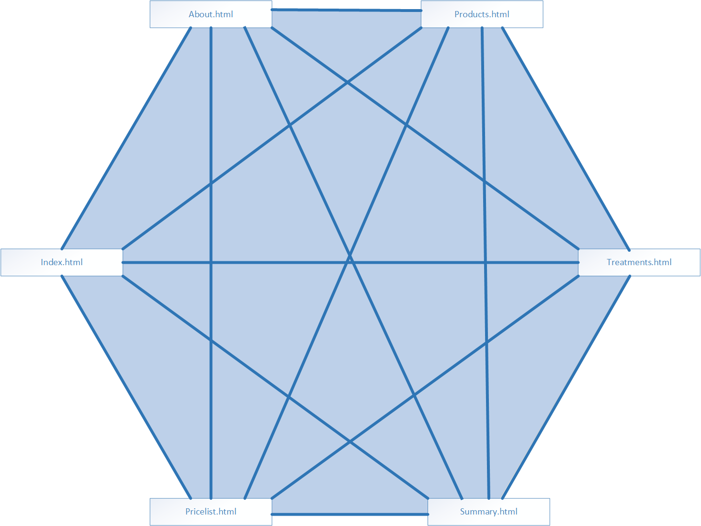
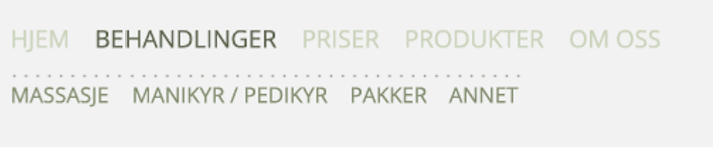
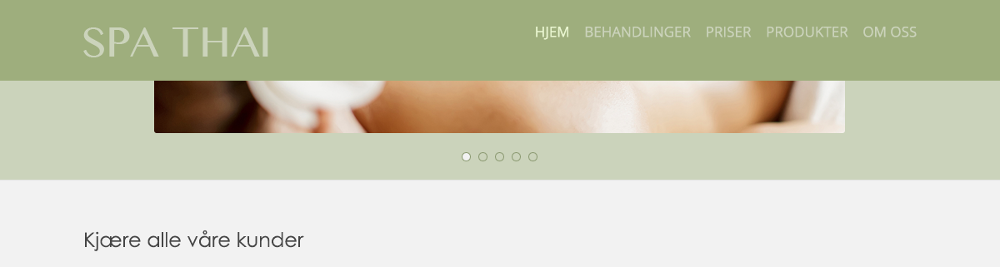
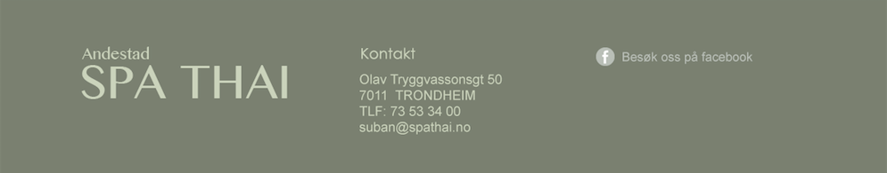
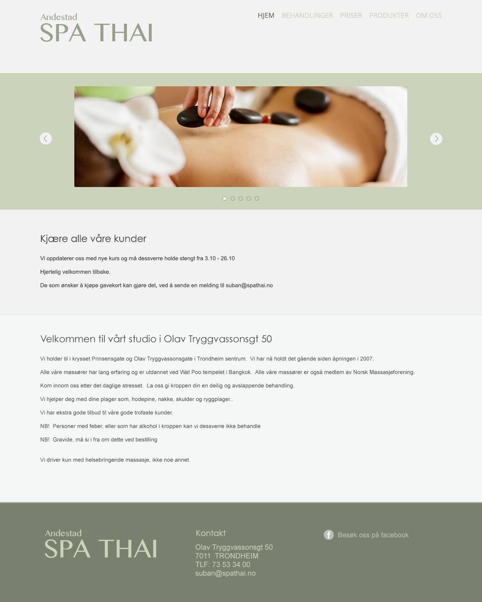
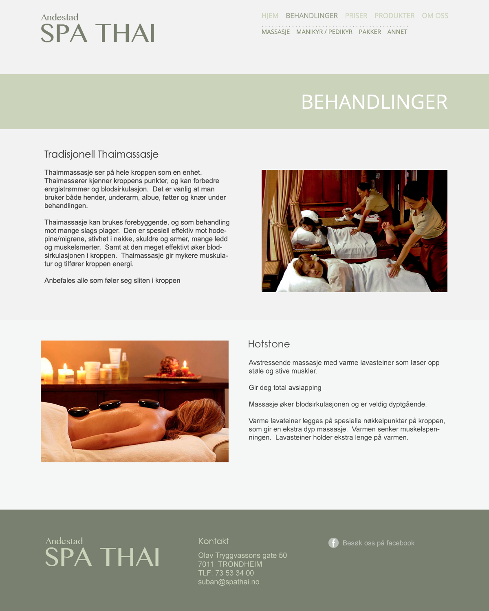
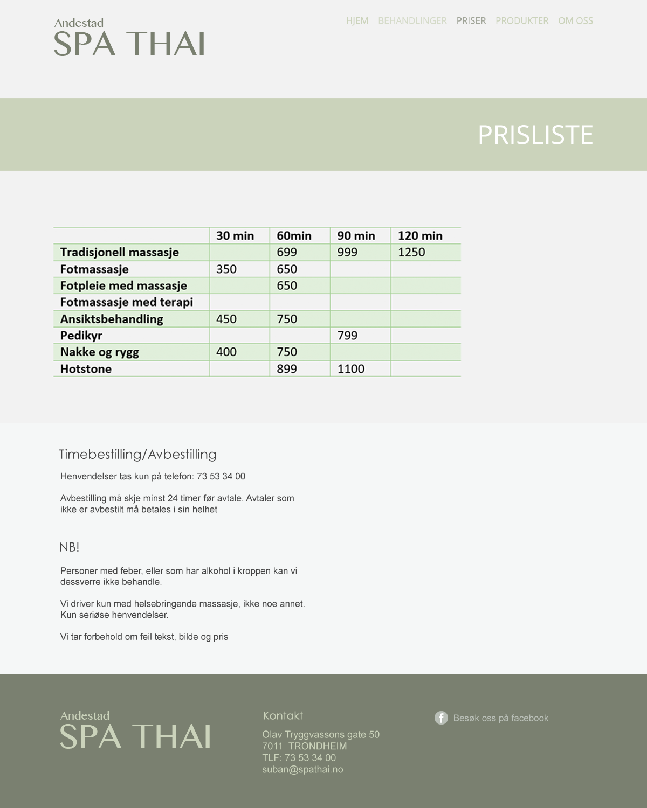
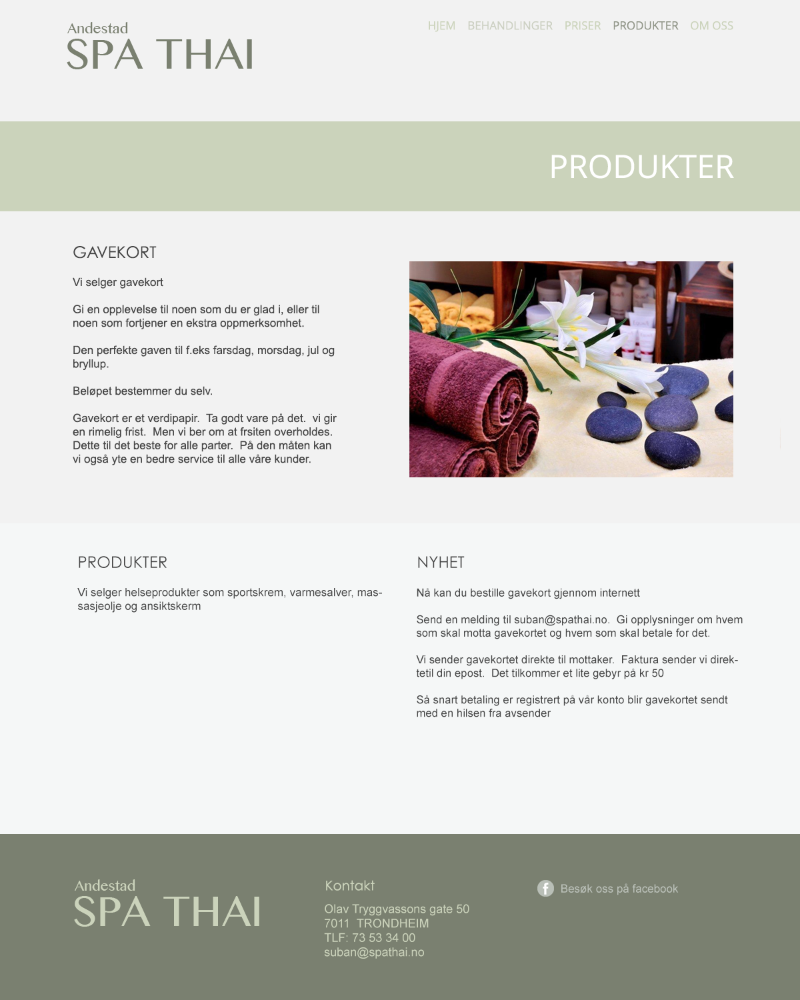
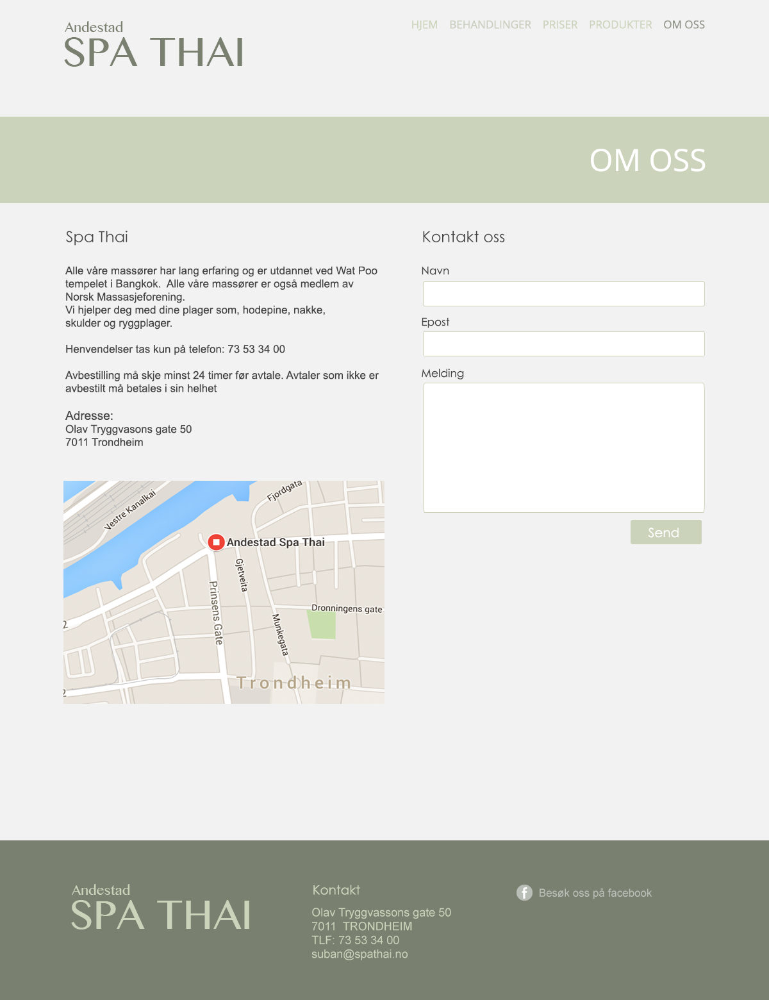

Eirik, Egil, Edvard, Simen and Cornelius
IT2805 Oktober 13, 2015
Our client is Spa Thai, located in Olav Tryggvasons Gate 50 in Trondheim.
Website Name: Spa Thai
Contact person: Suban Andestad (suban@spathai.no)
Rolle: Daglig leder
The site’s main purpose is to attract users to go to Spa Thai to receive treatment or purchase products. Therefore the site needs to highlight everything a user can expect at Spa Thai. The site also needs to have a professional look and feel because it reflects the business as a whole. It is also vital that the users of the site has very clear access to contact information because all transactions are handled in the shop at Spa Thai.
Their customer base consists of people from different age groups. So we have to consider that not all visitors possess the same skillset in regard to navigating a website.
The target audience will mainly consist of people who are looking for, or want to book, spa or massage treatment. Key information for these potential users are the different products/services and pricing. Spa Thai also emphasizes their treatment for sore/stiff muscles which will make the site relevant for people that are suffering such ailments.
The site’s main form of navigation will be a customised navigation bar that will have the position property “fixed”. However, using javascript, the navigation bar will be modified as the user scrolls down. The modification will make the navigation bar blend in better while scrolling to avoid it being a nuisance when the user wants to see the content on the page. The site will have a hierarchical structure to make it easy for the user to navigate.
Some of the pages will have a lot of info, and will be too long for scrolling only. Therefore we will need anchors, which will be modified the same way as the navigation bar. This way, the user can quickly move down to the section they want to see. The reason we use anchors instead of just making sub-pages is simply because we dont want the user to get lost and having to navigate back and fourth so much. Spa Thai has alot of information to provide, very similar information. Both our client and us agree that is feels better to have everything on one page, just like a wikipedia article, and rather be able for scroll fast up and down.
The picture below show our navigation structure (click to view bigger picture in new tab):
Seeing that Spa Thai is a massage parlor, one of the most important things is that the website has a calm and soothing effect on the user. The website must be inviting the user to visit Spa Thai. In order to achieve this effect, we will be using a Concrete (F2F2F2) and Black Haze (#F5F7F7) background with elements of Coriander (#CBD3BB). The user will be greeted with a slideshow of pictures that entices the user to visit Spa Thai. This slideshow will also include an option to manually sort through the images, as well as a javascript element that allows the user to click on the image and view them with increased size. Every page will have a navigation bar at the top, exactly like the one shown below.
The logo font is Bangla MN Regular. The navigation menu are represented as a horizontal list with font “[OpenSans Regular]” size 17px. The text of the navigation links will be in the color Coriander (#CBD3BB) because it enhances the text without it being too strong. The logo will be in the color Green Spring (#B9BFB7). This will make it stand out more, which is important since it is the logo and what connects the website to the business.
However, to highlight which page the user is currently on, we change the color of the text to Siam (#646B57) as shown below. This color will also appear when the user hovers their mouse over the links to distinguish it as a url.
For pages that have a lot of content, a sub menu will be presented so the user can quickly navigate the page using “anchors”. These anchors are also “[OpenSans Regular]” size 15pt, color Battleship Gray (#889275). This will make it clear an easy to see without overpowering the main navigation menu.
Using javascript, the navigation bar will be modified as the user scrolls down. The modification will make the navigation bar blend in better while scrolling to avoid it being a nuisance when the user wants to see the content on the page. We chose to use the color Green Smoke (#9EAE7D) on the background of the navbar, but the logo and links will still be the same color Coriander (#CBD3BB) as used before. Since the background color now is a lot darker than it was, the color of the active links are now a lighter color called White Flurry (#EAF6D1), instead of getting darker as it did originally.
The content section of the website has different colors on the different paragraphs. The section on top, which is the header on all sites except the home site, will be in the color Coriander (#CB3BB). Below that the paragraphs will every other time interchange between Concrete (#F2F2F2) and Black Smoke (#F5F7F7) to make up the background color of the site. This is in order to slightly distinguish them. It also aids in creating a nice look. The body width will be 1000px wide stretching all the background colors across the page, but all the content will be centered as shown in the mockup photos in content.
At the bottom of every page, there will be a footer which is split into three parts. The background color is Camouflage Green (#7A8070) which surrounds three text parts. The first text part is the logo, which is exactly the same as at the top of the page; color, font, layout, etc. The next is “Kontakt”. Same Coriander (#CBD3BB) as the logo but “Kontakt” is font Century Gothic Regular 20pt and the text beneath is Arial Regular size 18pt. The last text part is “Besøk oss på facebook” with an attached Facebook logo. This text is also Arial Regular Size however 17pt instead of the previously mentioned 18. This text as well as the facebook logo has the color Green Spring (#B9BFB7). The concept of the footer can be seen below.
This is the first page that the user sees when they visit http://www.spathai.no/. Therefore it contains some basic information about Spa Thai such as the staff’s formal massage education. This is found under “Velkommen til vårt studio i Olav Tryggvasons gate 50”. This page will also contain the slideshow of spa/thai massage pictures mentioned in the ‘Page layout and appearance’ section’. This is where Spa Thai also will put any news or important updates. Currently their update is that the store is closed because they are away updating their massage techniques.
The goal of this page is to make the user feel welcome and invite them to continue browsing and/or visit Spa Thai. Earlier in assignment P1 we wrote how the goal of this site is to tempt the user to consider buying a treatment. This is accomplished by the slideshow of pictures.
This page will contain all the information about the different services Spa Thai can provide. The user shall be able to scroll down, or use anchors to go down. The page is separated in four parts: “Massasje”, “manikyr/pedikyr”, “pakker” and “annet”.
“Massasje” is all types of massages they have. It starts with the full body massages: “Tradisjonell thaimassasje”, “klassisk massasje”, “idrettsmassasje” and “aromaterapi”. After that comes the specific bodypart massages: “Fot-massasje”, “Rygg- og nakkemassasje”. Last comes “Hot stones”.
After the “Massasje”-section comes “Manikyr/pedikyr”. This section will only show one treatment, which is “Manikyr/pedikyr med farge”.
The “Pakker”-section contains information about all the package-deals they have. For now they informed us that they only have one package-deal, but will expand in the near future. This is why we made a seperate section for “Pakker” and didn’t just put it in “Massasje”. In the future it will contain all treatments longer than 90 minutes.
The last part of the page is “Annet”. This section will display “Ansiktsbehandling”, “Varm parafinvoks behandling med fotpleie hender og føtter” and “Badstue”.
The treatmentpage will have many pictures, almost one for each section. The pictures will be 461 x 296px and floated to the right and left every other time, starting with right. The mockup below shows how the first two paragraphs will look, plus our footer.
This page fulfills the goal of showcasing what Spa Thai has to offer. Also, with beautiful pictures attract the user to buy one of the treatments themselves
This site will contain a table with the prices of the different treatments and products. We found this table to be quite hard to make proper in the form of a mockup, but the intention is that it shall contain the same color-palette as used on the rest of the site and more room in each column than we have in the mockup.
Under the table of prices we also added information about appointment reservation/cancellation in addition to some general precautions.
The goal for “Priser” is to give the user an overview of the prices and the duration of the services Spa Thai has to offer. In addition to this, our goal is also to showcase information in regards to reservations, canceling of appointments, and basic rules.
This site will contain a table with the prices of the different treatments and products. We found this table to be quite hard to make proper in the form of a mockup, but the intention is that it shall contain the same color-palette as used on the rest of the site and more room in each column than we have in the mockup.
Under the table of prices we also added information about appointment reservation/cancellation in addition to some general precautions.
“Produkter” aims to attract customers to Spa Thai to buy products such as creams, oils, etc. Therefore it is vital that the page is well-presented and clear so that the user/customer does not have to search for a specific product for a long time because it might cause them to lose interest and navigate away.
“Om oss” will contain a small text describing Spa thai and their practices, their address/phone, a map showing their location and a contact form.
We choose to include their address/phone on this site even though it’s included in the footer, because not all end users will think to look there.
Using javascript we will include an interactive google-map showing their location. For the contact form we will we will use 2 javascript functions; one to validate the input and one to open the users mail-client containing the information entered.
The goal for “Om oss” is to give to show where it is located, as well as giving the user the opportunity to ask questions or give Spa Thai feedback.
The minimum javascript requirements will be implemented as described below. The first 4 functions will be implemented with javascript without any libraries.
This will be implemented using simple javascript without any libraries. It should alert the user if any information entered is wrong or forgotten. Responsible: Simen Johansen
This function shall open the users mail client so that the text entered in the contactform automatically fills the “new-mail”-box. Responsible: Simen Johansen
When the user hovers over the active image on index.html (Hjem) the image shall be slightly dimmed and a short overlaying heading and text describing what the image represents shall be displayed.
Responsible: Edvard Sjøblom
Under pricelist.html when a user hovers over a table row, it shall be highlighted to make it clearer. Responsible: Egil Uggerud
When the page is scrolled 200px+ downwards the menu and logo shall be transformed to a smaller navigation bar. The logo will now only show Spa Thai (not Andestad). The background also changes with this effect (see navigation section). The nav-bar will now always be present at the top of the page no matter how far down the user scrolls. Responsible: Simen Johansen and Edvard Sjøblom
The slideshow on the frontpage shall change the displayed image with an animation when a user either clicks the lef/right-arrows next to the image or the small indication icons below the image. Responsible: Cornelius Dahling
The website is directly based on the ensuing file structure and our work divison / deadlines will be completed as shown in below. This helps us organize our workload and gives each one in the group a clear overview of what they have to do.
html/ index.html treatments.html products.html pricelist.html about.html css/ style.css js/ navigationScroll.js slideshow.js formValidation.js tableHighlighting.js rollover.js jquery.js (external lib) modularity/ header.part footer.part images/ spthai.png facetreatment.png massage.png oilmassage.png footmassage.png hotstonemassage.png pedicure.png manicure.png sauna.png products.png
| Filename | Description | Assigned to | Due |
|---|---|---|---|
| index.html | The homepage | Edvard | 27.10.2015 |
| treatments.html | Type of treatments Spa Thai offers | Egil | 31.10.2015 |
| products.html | The different type of products that Spa Thai sell | Cornelius | 26.10.2015 |
| pricelist.html | An overview of Thai Spa's prices | Simen | 02.11.2015 |
| about.html | Basic information about Spa Thai | Eirik | 05.11.2015 |
| style.css | CSS that contains all the styling for the website | Everyone | 09.11.2015 |
| navigationScroll.js | Changes the navigation bar when the user starts scrolling | Edvard, Eirik | 01.11.2015 |
| slideshow.js | The animation of the image transition on the homepage | Cornelius | 25.10.2015 |
| formValidation.js | Validates the text input on about.html and makes sure for example the email is formatted properly. | Simen | 03.11.2015 |
| tableHighlighting.js | Under pricelist.html when a user hovers over a table row, it shall be highlighted to make it clearer. | Egil | 29.10.2015 |
| rollover.js | When the user hovers over the active image on index.html (Hjem) the image shall be slightly dimmed and a short overlaying heading and text describing what the image represents shall be displayed. | Edvard | 28.10.2015 |